Sequences
138.
The nth term of the sequence 0, 9, 22, 39, ... is
,
where a and b are integers.
Find the value of a and the value of b.
Find the value of a and the value of b.
a = ......................... b = ......................... [3]
Paper 2
140.
Consider the sequence:
7, 12, 17, 22, 27, ...
(a) Write the next two terms of the sequence.
7, 12, 17, 22, 27, ...
(a) Write the next two terms of the sequence.
(a) ......................... [1]
(b) Find the nth term of the sequence.
(b) ......................... [1]
(c) If the kth term is 212, find the value of k.
(c) k = ......................... [2]
Paper 2
145.
Given the sequence:
Find:
(a) The missing terms p and q,
Find:
(a) The missing terms p and q,
(a) p = ......................... q = ......................... [2]
(b) The nth term.
(b) ......................... [2]
Paper 2
73.
(a) A sequence has
,
,
and
.
(i) Find .
(i) Find .
T3 = ......................... [3]
(ii) Write an expression for Tn, in terms of n.
Tn = ......................... [2]
(iii) Find n when Tn = 312.
n = ......................... [2]
Paper 4
76.
The diagram shows a sequence of patterns made from shaded and unshaded squares.
(a) Complete the table.
| Pattern number | 1 | 2 | 3 | 4 |
|---|---|---|---|---|
| Number of unshaded squares | 1 | 3 | ... | ... |
| Number of shaded squares | 0 | 2 | 8 | ... |
| Total number of squares | 1 | 5 | 13 | ... |
[3]
(b) Write an expression in terms of n for the number of:
(i) unshaded squares in pattern n,
(i) unshaded squares in pattern n,
......................... [2]
(ii) shaded squares in pattern n.
......................... [2]
(c) The total number of squares in n is
.
Find the pattern number with a total of 613 squares.
Find the pattern number with a total of 613 squares.
n = ......................... [2]
Paper 4
81.
(a) The sequence 2, 7, 15, 26, 40, 57, ... has nth term
.
(i) Find the 20th term of the sequence.
(i) Find the 20th term of the sequence.
T20 = ......................... [1]
(ii) Find the position of the term 3775 in the sequence.
n = ......................... [3]
(b) Find the nth term of the sequence:
7, 15, 26, 40, 57, 77, ...
7, 15, 26, 40, 57, 77, ...
Tn = ......................... [1]
Paper 4
84.
(a) The diagram shows patterns with dotted and plain tiles.
(i) Complete the 4th pattern.

See diagram [1]
(ii) Complete the table below.
| Pattern number | 1 | 2 | 3 | 4 | 5 |
|---|---|---|---|---|---|
| Dotted tiles | 1 | 3 | 5 | ... | ... |
| Plain tiles | 3 | 6 | 11 | ... | ... |
See table [2]
(iii) Write an expression, in terms of n, for the number of dotted tiles in the pattern.
......................... [2]
(iv) Find the number of dotted tiles in the 20th pattern.
......................... [1]
(v) How many more dotted tiles are in pattern n + 7 than in pattern n?
......................... [2]
(b) Write an expression, in terms of n, for the number of plain tiles in the nth pattern.
......................... [2]
(c) Find:
(i) The pattern with 227 plain tiles,
(i) The pattern with 227 plain tiles,
n = ......................... [2]
(ii) The total number of tiles in pattern 65.
......................... [2]
Paper 4
87.
The first three diagrams of a sequence are shown.
Each diagram is made from dots and lines in which the area of each square is 1 square unit.
(a) Complete the table for diagram 4.
Each diagram is made from dots and lines in which the area of each square is 1 square unit.

| diagram | 1 | 2 | 3 | 4 | ... | n |
|---|---|---|---|---|---|---|
| Number of dots | 4 | 9 | 16 | ... | ... | x |
| area | 1 | 4 | 9 | ... | ... | y |
| Number of lines | 4 | 12 | 24 | ... | ... | z |
[3]
(b) Express x, y and z in terms of n.
Give each answer in its simplest form.
Give each answer in its simplest form.
x = ......................... y = ......................... z = ......................... [5]
(c) Diagram k has 361 dots.
Find:
(i) k,
Find:
(i) k,
k = ......................... [3]
(ii) the number of lines in diagram k.
......................... [2]
Paper 4
88.
The first three diagrams in the sequence are shown below.
The diagrams are made up of dots and lines. Each line is one centimetre long.
(a) Draw the next diagram in the sequence.
The diagrams are made up of dots and lines. Each line is one centimetre long.

See diagram [1]
(b) The table shows some information about the diagrams.
(i) Write down the values of s and t.
| Diagram | 1 | 2 | 3 | 4 | ... | n |
|---|---|---|---|---|---|---|
| Perimeter | 4 | 8 | 12 | s | ... | v |
| Area | 1 | 4 | 9 | 16 | ... | w |
| Number of lines | 4 | 12 | 21 | t | ... | x |
s = ......................... t = ......................... [2]
(ii) Write expressions for v, w and x, in terms of n.
v = ......................... w = ......................... x = ......................... [4]
Paper 4
89.
The total number of lines in the first n diagrams is given by the expression
.
(i) Show that:
(a) for n = 1,
(i) Show that:
(a) for n = 1,
......................... [1]
(b)
for n = 2.
......................... [2]
(ii) Find:
(a) The values of h and k,
(a) The values of h and k,
h = ......................... k = ......................... [3]
(b) The total number of lines in the first 12 diagrams.
......................... [1]
Paper 4
94.
The table shows the first five terms of sequences A, B and C.
(a) Complete the table for the 6th term of each sequence.
(a) Complete the table for the 6th term of each sequence.
| Term | 1 | 2 | 3 | 4 | 5 | 6 |
|---|---|---|---|---|---|---|
| Sequence A | 21 | 19 | 17 | 15 | 13 | ... |
| Sequence B | 4 | 7 | 12 | 19 | 28 | ... |
| Sequence C | 25 | 26 | 29 | 34 | 41 | ... |
See table [3]
(b) Find the nth term of:
(i) Sequence A,
(i) Sequence A,
Tn = ......................... [2]
(ii) Sequence C.
Tn = ......................... [3]
(c) For the sequence B, tn = n2 + 3.
(i) Find the 17th term,
(i) Find the 17th term,
T17 = ......................... [1]
(ii) Is 199 one of the terms in the sequence? Justify.
......................... [2]
Paper 4
96.
Lipuo makes a sequence of patterns using black and grey triangular tiles.
(a) Draw the fourth pattern in the space provided.

See diagram [1]
(b) Complete the table.
| Pattern | Number of black tiles | Number of grey tiles |
|---|---|---|
| 1 | 1 | 3 |
| 2 | 1 | 6 |
| 3 | 1 | 9 |
| 5 | 1 | ... |
| 6 | 1 | ... |
| n + 2 | 1 | ... |
See table [3]
(c) Find the number of grey tiles in the 15th pattern.
......................... [1]
(d) Find the pattern number that can be made from 61 tiles.
n = ......................... [2]
(e) Find, in terms of n, the total number of tiles in the nth pattern.
......................... [2]
Paper 4